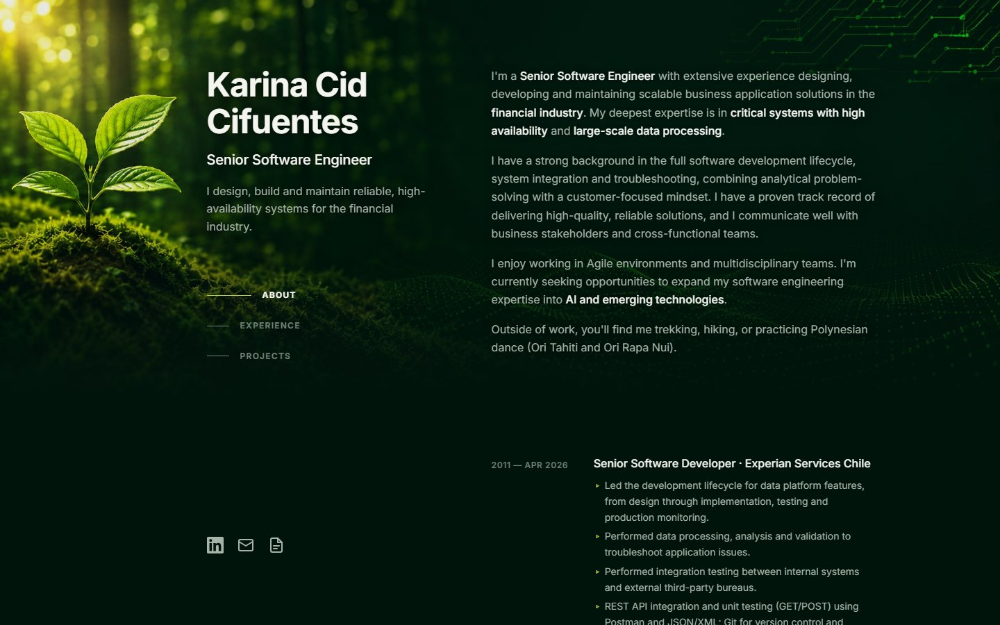

About
I'm a Senior Software Engineer with extensive experience designing, developing and maintaining scalable business application solutions in the financial industry. My deepest expertise is in critical systems with high availability and large-scale data processing.
I have a strong background in the full software development lifecycle, system integration and troubleshooting, combining analytical problem-solving with a customer-focused mindset. I have a proven track record of delivering high-quality, reliable solutions, and I communicate well with business stakeholders and cross-functional teams.
I enjoy working in Agile environments and multidisciplinary teams. I'm currently seeking opportunities to expand my software engineering expertise into AI and emerging technologies.
Outside of work, you'll find me trekking, hiking, or practicing Polynesian dance (Ori Tahiti and Ori Rapa Nui).
Experience
-
2011 — Apr 2026 Senior Software Developer · Experian Services Chile
- Led the development lifecycle for data platform features, from design through implementation, testing and production monitoring.
- Performed data processing, analysis and validation to troubleshoot application issues.
- Performed integration testing between internal systems and external third-party bureaus.
- REST API integration and unit testing (GET/POST) using Postman and JSON/XML; Git for version control and Jenkins for CI/CD.
- Used Jira, Confluence and Bitbucket to support project management and development workflows, collaborating with cross-functional Agile teams.
- On-call support for critical applications; led and mentored the onboarding of new developers.
Key achievements
- Achieved a 100% deployment success rate in compliance with client SLA requirements for quality, performance and availability.
- Led the development and implementation of a new application for a strategic Experian client, integrating an external bureau and multiple internal systems. Received the Experian Spot Award for Client Delight.
- Led onboarding and training of new developers by creating functional documentation, development guides and training sessions.
- C / C++
- JCL
- DB2
- SQL
- Python
- XML
- JSON
- AWS
- REST APIs
- Git
- Postman
- Jenkins
- Scrum
- Kanban
-
2008 — 2011 Software Development Engineer · Vialcom Ltda
- Developed and maintained web pages using the Drupal CMS.
- Maintained and provided technical support for an Inventory Management System.
- Provided technical support to clients and troubleshot system issues.
- Performed SQL query optimization to improve database performance and response time.
- Created and maintained technical and functional documentation.
Key achievement
- Led the optimization of an inventory recalculation process for an enterprise application, reducing execution time by 70% through new database indexes.
- HTML
- PHP
- JavaScript
- Drupal
- C++ Builder
- SQL
-
2007 — 2008 IT System Analyst · TCS Chile
- Provided maintenance and technical support for Transbank banking software applications.
- Developed, enhanced and maintained applications using Visual Basic, Oracle Forms 6i, SQL and PL/SQL.
- Analyzed technical requirements and prepared technical documentation in compliance with CMMI Level 5 processes and standards.
Key achievement
- Implemented a preventive solution to stop future data inconsistencies and strengthen application reliability.
- Visual Basic
- Oracle Forms 6i
- PL/SQL
- Oracle Database
- CMMI
Projects
-

Personal Portfolio
My personal portfolio, designed and developed with Claude Code, Anthropic's agentic coding tool. I guided it in natural language to turn my résumé into a responsive single page built with HTML, CSS and JavaScript: a hands-on way to explore AI-assisted software development.
- Claude Code
- HTML
- CSS
- JavaScript
- Responsive design